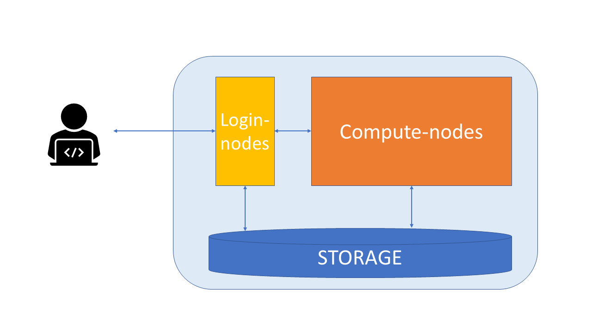
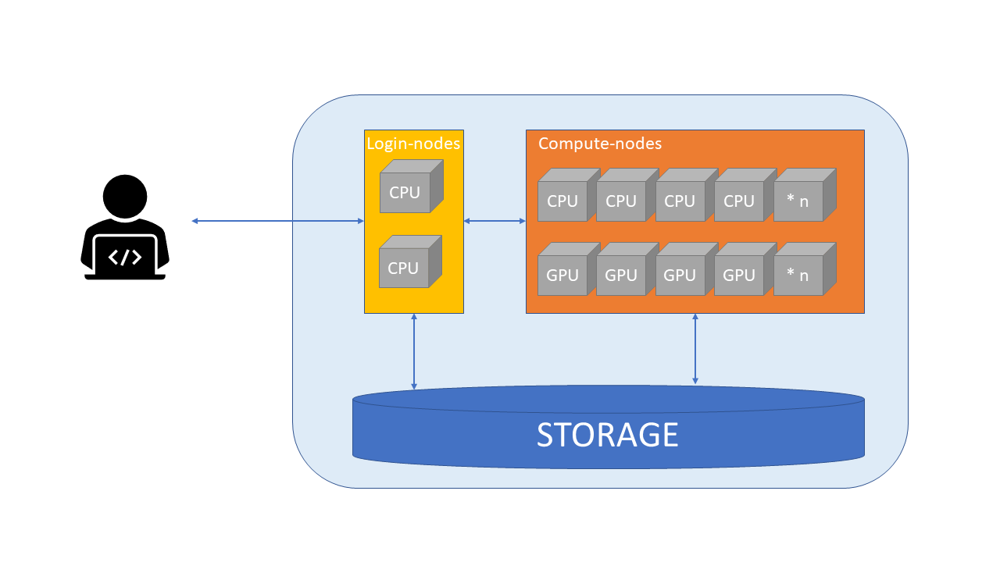

Supercomputer setup#

Typical physical parts of a supercomputer:
Login nodes
Compute nodes
Storage
High-speed networks between these
Login nodes#
Login nodes are used for moving data and scripts, editing scripts, and starting jobs.
When you login to CSC’s supercomputers, you enter one of the login nodes of the computer
There are only a few login nodes and they are shared by all users, so they are not intended for heavy computing.

Compute nodes#
Heavy computing should be done on compute-nodes.
Each node has memory, which is used for storing information about the current task.
Compute nodes can be classified based on the types of processors they have:
CPU nodes have only CPUs (central processing unit).
GPU nodes have both GPUs (graphical processing unit) and CPUs. GPUs are widely used for deep learning.
Each CPU has multiple cores, which are the basic computing resource. There are 40 cores in Puhti and 128 in Mahti and LUMI CPU-nodes.
Whether your task benefits from a GPU depends on the software used. Most GIS-tools can not use GPUs.
GPUs are more expensive, so in general the software should run at least 3x faster on GPU, that it would be reasonable to use GPU nodes.
When using compute nodes, the compute resources have to be defined in advance. You must specify e.g. the amount of GPUs, memory and nodes or CPU cores.
Storage#

Disk refers to all storage that can be accessed as a file system. This is generally storage that can hold data permanently, i.e. data is still there even if the computer has been restarted.
CSC supercomputers use Lustre as the parallel distributed file system
Puhti disk areas#
Name |
Access |
Path |
Cleaning |
Capacity |
Number of files |
Use |
|---|---|---|---|---|---|---|
Personal |
|
No |
10 GiB |
100 000 files |
personal settings and files |
|
Project |
|
No |
50 GiB |
100 000 files |
installation files |
|
Project |
|
180 days |
1 TiB |
1 000 000 files |
main working area |
scratchspace can be extended, but it would use billing units then.
Temporary fast disks#
Some nodes might also have local disk space for temporary use.
CSC Docs: Login node local tmp
$TMPDIRfor compiling, cleaned frequently.CSC Docs: NVMe -
$LOCAL_SCRATCHin batch jobs,NVMe is accessible only during your job allocation (including any interactive jobs)
You must copy data in and out during your batch job
If your job reads or writes lots of small files, using this can give 10x performance boost
Avoid unneccesary reading and writing
Avoid unnecessary reads and writes of data to improve I/O performance
Read and write in big chunks and avoid reading/writing lots of small files
If unavoidable, use fast local NVMe disk, not Lustre (i.e.
/scratch)
LUMI disk areas#
LUMI has similar main disks, but different temporary disks.
Login node etiquette
Which of the following tasks would suit to run on the login node?
python join_dataframes.pymakecreate_directories.shqgistar -xzf mytool.tar.gz
Solution
Options #3 creating directories (mkdir), and #5 unpacking software (tar) are common and acceptable tasks for the login node. Option #2 Building software (make) can be done on the login node, but ideally one would use a compute node with local scratch to avoid stressing the filesystem in the process.
Note that script names do not always reflect their contents: before launching #3, please check what is inside create_directories.sh and make sure it does what the name suggests.
Running resource-intensive applications on the login node is forbidden. Unless you are sure it will not affect other users, do not run jobs like #1 (python) or #4 (a software). You will in any case want more resources for these than the login node can provide.